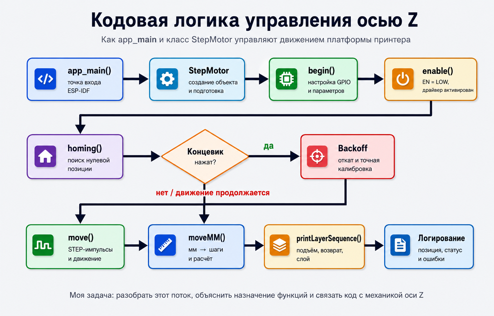

Учебный проект по разработке и доработке малого фотополимерного 3D-принтера:
от конструкции и электроники до интерфейса, демонстрации и обслуживания оборудования.
О проекте
NeoPixel рассматривается как компактный фотополимерный принтер. В проекте изучались
устройство принтера, питание, управление шаговым двигателем оси Z, работа UV-матрицы,
подключение дисплея и подготовка материалов для демонстрации проекта.
Аппаратная часть
В основе проекта используются ESP32-S3, драйвер шагового двигателя A4988,
двигатель NEMA17, UV-матрица 12В, дисплей ILI9488 и внешний блок питания.
Программная часть
Код проекта пишется под ESP-IDF в среде Visual Studio Code с PlatformIO.
В репозитории уже есть модуль управления шаговым двигателем `StepMotor`.
Практический результат
Команда разбирала конструкцию, обслуживание принтера, GUI, работу моделей,
пайку, подготовку демонстрационных материалов и презентацию проекта.
Блок-схема кодовой работы
Блок-схема показывает, как `app_main()` и класс `StepMotor` управляют осью Z
через функции `begin`, `enable`, `homing`, `move`, `moveMM` и `printLayerSequence`.

Участники
По материалам отчетов участников были выделены основные направления личного вклада
в проект NeoPixel.
Тулин Тимофей Павлович
Изучил подключение драйвера A4988 к ESP32-S3, разобрал логику управления осью Z и описал работу сигналов `STEP`, `DIR` и `EN`.
Репина Алёна
Подготовила презентационные материалы, изучила фотополимерную печать и участвовала в демонстрации проекта на Дне открытых дверей.
Попов В. С.
Занимался направлением GUI: анализировал способы формирования интерфейса и выбирал подход с учетом ограничений памяти ESP.
Мачигин Т. П.
Участвовал в обсуждении модификаций корпуса принтера и предлагал улучшения конструкции, включая доработки оси Z.
Донской С. Д.
Работал с моделями, участвовал в обсуждении конструкции, пайке и поддержании порядка в лаборатории.
Кузьмин А. Ю.
Участвовал в работе с моделями, обслуживании станка, подготовке материалов, закупке и изучении пайки.
Журнал
Журнал оформлен как ход работы по проекту. Отдельно отражена моя задача по
анализу подключения A4988 и логики движения оси Z.
v0 вход в проект и выбор участка работы
Я познакомился с направлением NeoPixel и общей идеей малого фотополимерного
3D-принтера. В репозитории посмотрел основные файлы проекта: `README.md`,
`src/main.cpp` и `include/Stepmotor.h`.
На этом этапе стало понятно, что самым понятным участком для анализа будет ось Z:
в проекте уже описано подключение A4988, NEMA17 и концевого выключателя.
v1 разбор подключения A4988
Я разобрал таблицу подключения драйвера A4988 к ESP32-S3. Основное внимание
уделил сигналам `STEP`, `DIR` и `EN`, потому что именно они отвечают за движение
шагового двигателя.
В результате я сформулировал простое объяснение: `STEP` задает импульсы шага,
`DIR` выбирает направление, а `EN` включает или отключает драйвер.
v2 анализ логики StepMotor
Я изучил файл `include/Stepmotor.h` и разобрал, как класс `StepMotor` управляет
движением: инициализирует GPIO, включает драйвер, отправляет импульсы и отслеживает
текущую позицию платформы.
Отдельно отметил, что метод `moveMM` переводит миллиметры в шаги, а значит связывает
программную команду с реальным перемещением платформы принтера.
v3 калибровка и безопасность движения
На следующем этапе я разобрал назначение концевого выключателя и функции `homing`.
Эта часть нужна, чтобы принтер мог найти нулевую позицию оси Z и не уводил платформу
за допустимые пределы.
Я описал, почему калибровка выполняется в несколько фаз: спуск до концевика, откат,
повторный медленный спуск и установка рабочей позиции.
v4 итоговое оформление задачи
Финальным этапом я оформил задачу для сайта: добавил краткое описание моего вклада,
схему управления осью Z и объяснение связи между ESP32-S3, A4988, NEMA17 и концевым
выключателем.
В результате задача стала понятной без готового принтера: по сайту видно, какой
участок проекта был изучен, зачем он нужен и как он связан с работой фотополимерного
3D-принтера.
Ресурсы
Материалы, которые использовались для понимания проекта, аппаратной части и среды разработки.